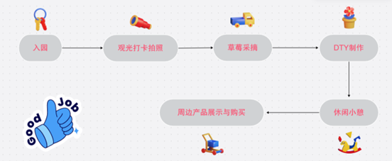

草莓农场游玩指南
地址：
钦禾草莓农乐园位于⿊⻰江尚志市、绥化市和⻬⻬哈尔市，欢迎您的到来！
交通方式：
您可以选择乘坐公共交通工具（地铁、公交等）或者自驾前往。具体交通信息请参考官方网站或导航软件。
入园时间：
开园时间为每天早上7:00，结束时间为下午4:00。请在开园时间内入园，以确保充分的游玩时间。
游玩流程图：
6. 实用小贴士：
穿着舒适的衣物和鞋子，以便在农场自由行走。
带上防晒霜和帽子，保护自己免受阳光的影响。
随身携带一瓶水，确保在活动中保持充足的水分。
请遵循工作人员的引导，确保您的安全和周围环境的整洁。
希望您在草莓农场度过愉快而难忘的时光！